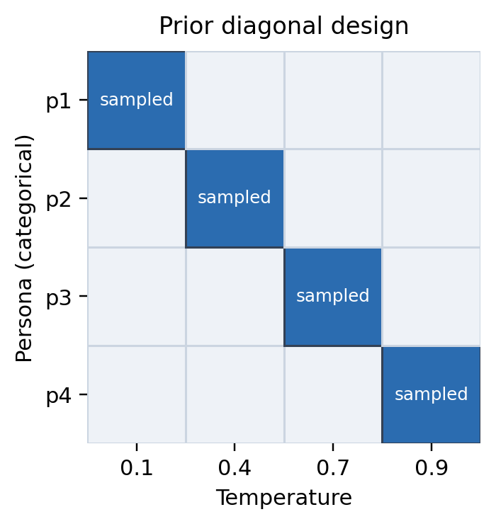
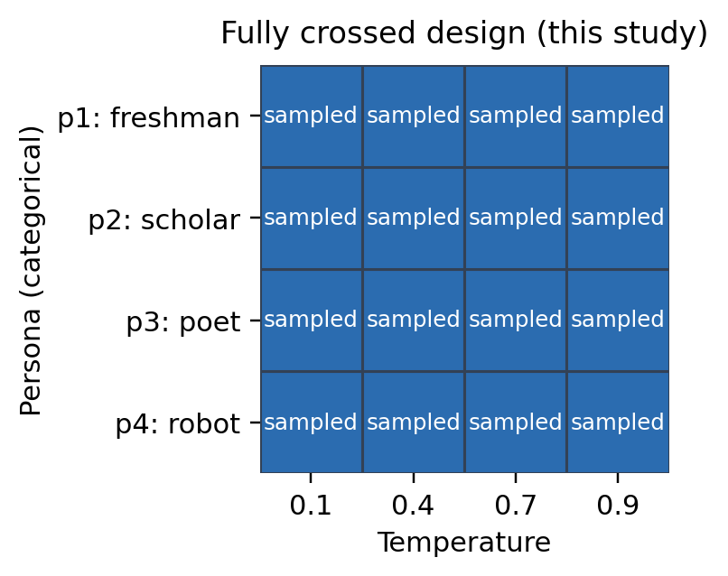
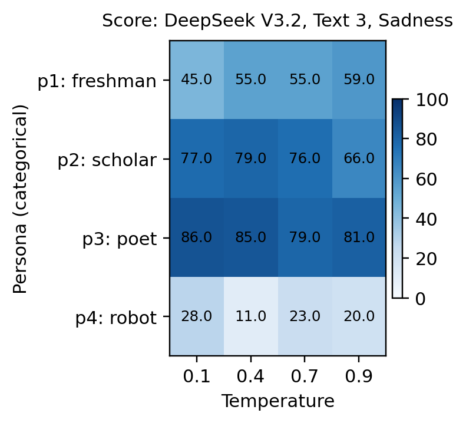
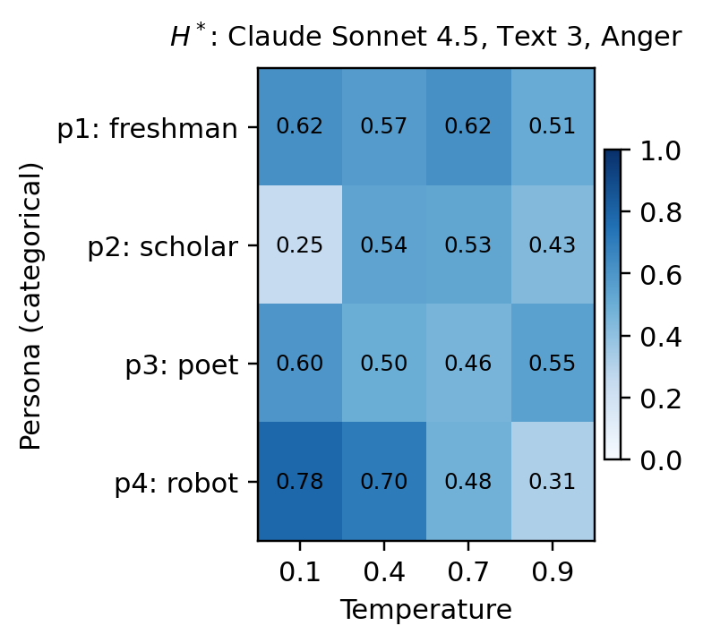
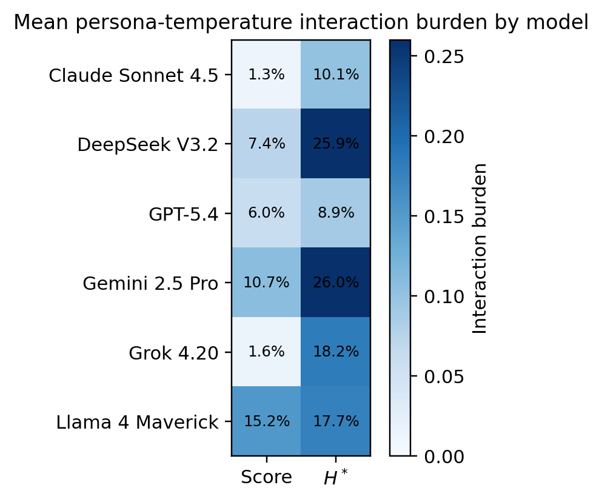

Introduction → Methods → Results → ConclusionSCIS & ISIS 2026 · Paper 171
Naruki Shirahama · Yuma Yoshimoto · Naofumi Nakaya · Satoshi Watanabe
Shimonoseki City University · NIT (KOSEN), Kitakyushu
College
Juntendo University · Shizuoka Institute of Science and
Technology
Presenter: Naruki Shirahama · Shimonoseki City University, Japan
SS-12: Narration and Interpretation in the Age of Generative
AI
November 3, 2026 · 10:50–11:10 JST · Room A · Paper 171
Which changes come from the reading stance, and which from sampling?
Introduction → Methods → Results → ConclusionSCIS & ISIS 2026
A persona is a prompt-defined reading stance.
Source: Introduction and Experiments.
Introduction → Methods → Results → ConclusionSCIS & ISIS 2026

Here p1–p4 are schematic labels,
not the current persona assignments.
Analysis cannot recover combinations that were never observed.
Source: Introduction; prior bundled-design figure.
Introduction → Methods → Results → ConclusionSCIS & ISIS 2026

The persona order is categorical.
It is not a psychological scale.
Independent variation makes the two contributions distinguishable.
Source: paper, Method and Experiments; fully crossed design figure.
Introduction → Methods → Results → ConclusionSCIS & ISIS 2026
The same fixed panel supports both outcome summaries.
Source: Experiments; experimental-panel and structured-output tables.
Introduction → Methods → Results → ConclusionSCIS & ISIS 2026
How high is the reported emotion intensity?
Response scores → Cell mean
How do scores overlap the Low, Medium and High membership regions?
Each score → H* → Cell mean
Use one fixed membership family for comparisons.
H* describes membership overlap, not human emotional uncertainty.
Source: Method; Membership Specification and Entropy.
Introduction → Methods → Results → ConclusionSCIS & ISIS 2026
The share of the cell-mean decomposition assigned to interaction.
Smaller B → more nearly additive
With interaction, the temperature pattern depends on the persona.
One 4 × 4 cell-mean table per model, text and emotion.
Source: Method, balanced decomposition and interaction-share definition.
Introduction → Methods → Results → ConclusionSCIS & ISIS 2026
Mean decomposition shares for emotion scores
| Emotion | Persona | Temperature | Interaction |
|---|---|---|---|
| Anger | 80.8% | 6.0% | 13.2% |
| Interest | 93.7% | 1.8% | 4.6% |
| Sadness | 95.3% | 1.3% | 3.4% |
| Surprise | 90.0% | 3.0% | 7.0% |
Average of 18 within-unit shares per emotion: 6 models × 3 texts.
Persona is the largest component in this selected panel.
Source: Primary decomposition table, score rows; point estimates.
Introduction → Methods → Results → ConclusionSCIS & ISIS 2026
Mean interaction share B · Same crossed design, two outcomes
| Emotion | Score | Entropy H* |
|---|---|---|
| Anger | 13.2% | 28.3% |
| Interest | 4.6% | 13.5% |
| Sadness | 3.4% | 9.6% |
| Surprise | 7.0% | 19.8% |
Each row averages 18 within-unit shares: 6 models × 3 texts.
Point
estimates; conditional on this panel and the primary membership family.
The interaction share is larger for entropy in all four emotions.
Source: paper, primary decomposition table. Repeat-level 95% intervals are retained in the source table.
Introduction → Methods → Results → ConclusionSCIS & ISIS 2026

Selected low-interaction example.
It is not the panel average.
Most of this pattern can be described by additive contributions.
Source: Selected score heatmap; B=0.039, rounded as in the manuscript.
Introduction → Methods → Results → ConclusionSCIS & ISIS 2026

Selected from high-interaction cases.
This is not the panel average.
The temperature pattern depends on the persona.
Source: paper, selected entropy heatmap. A different model and emotion from the score example.
Introduction → Methods → Results → ConclusionSCIS & ISIS 2026
Five repeats and a sensitivity check support a bounded diagnostic.
Source: Discussion; Limitations and Future Work.
Introduction → Methods → Results → ConclusionSCIS & ISIS 2026
Design the comparison before interpreting the differences.
Source: Discussion and Conclusion.
Introduction → Methods → Results → ConclusionSCIS & ISIS 2026 · Discussion
Separate the controls.
Examine both outcomes.
Naruki Shirahama · Shimonoseki City University
This work was partially supported by JSPS KAKENHI
Grant Numbers
JP26K14983 and JP24K13350.
Q&A references follow on slides 15–20.
Introduction → Methods → Results → ConclusionSCIS & ISIS 2026 · Q&A reference · 1 / 6
| Outcome | Emotion | Persona | Temperature | Interaction | Separability |
|---|---|---|---|---|---|
| Score | Anger | 80.8%[77.4%, 84.3%] | 6.0%[4.1%, 7.9%] | 13.2%[9.2%, 17.2%] | 86.8%[82.8%, 90.8%] |
| Score | Interest | 93.7%[91.7%, 95.6%] | 1.8%[0.8%, 2.7%] | 4.6%[3.0%, 6.1%] | 95.4%[93.9%, 97.0%] |
| Score | Sadness | 95.3%[93.7%, 97.0%] | 1.3%[0.4%, 2.1%] | 3.4%[2.1%, 4.7%] | 96.6%[95.3%, 97.9%] |
| Score | Surprise | 90.0%[87.8%, 92.2%] | 3.0%[1.5%, 4.5%] | 7.0%[5.0%, 9.0%] | 93.0%[91.0%, 95.0%] |
| Entropy H* | Anger | 61.0%[56.1%, 66.0%] | 10.7%[8.1%, 13.4%] | 28.3%[22.9%, 33.6%] | 71.7%[66.4%, 77.1%] |
| Entropy H* | Interest | 81.7%[76.4%, 87.0%] | 4.8%[3.0%, 6.7%] | 13.5%[9.3%, 17.7%] | 86.5%[82.3%, 90.7%] |
| Entropy H* | Sadness | 87.1%[83.7%, 90.4%] | 3.4%[1.8%, 4.9%] | 9.6%[6.7%, 12.4%] | 90.4%[87.6%, 93.3%] |
| Entropy H* | Surprise | 73.3%[68.9%, 77.8%] | 6.9%[4.3%, 9.5%] | 19.8%[15.8%, 23.8%] | 80.2%[76.2%, 84.2%] |
n = 18 model-text units per row · Point-centered normal 95%
intervals
500 within-cell bootstrap resamples · Seed 20260425 · Five
repeats per cell
Source: Primary decomposition table; camera-ready verification record.
Introduction → Methods → Results → ConclusionSCIS & ISIS 2026 · Q&A reference · 2 / 6
For one model, text and emotion: ȳ is a repeat mean in the 4 × 4 table.
Separability share = 1 − B. Repeat variation is assessed by
bootstrap,
not added as a fourth sum-of-squares component.
B is normalized within each cell-mean table.
Source: Method, equations (1)–(4), converted to native MathML.
Introduction → Methods → Results → ConclusionSCIS & ISIS 2026 · Q&A reference · 3 / 6
Low: decreases over 0–30
Medium: rises 10–30; plateau 30–50; falls
50–70
High: rises over 50–100
Decreasing transition: 1 − S(z).
Endpoint constants outside the
transitions.
Hmax grid: 0, 0.001, …, 100.0
Convention: 0 log 0 = 0
| Quantity | Value |
|---|---|
| Primary / baseline |
sigmoid_s_v1 legacy_linear_v1 |
| Cell means (n) | 1152 |
| Hmax, primary / baseline | 1.019 / 1.058 |
| Correlation (r) | 0.933 |
| Mean / max |Δ| | 0.130 / 0.479 |
A sensitivity comparison does not establish external validity.
Source: Membership Specification and Entropy; sensitivity table.
Introduction → Methods → Results → ConclusionSCIS & ISIS 2026 · Q&A reference · 4 / 6
| Display name | Requested API model ID |
|---|---|
| GPT-5.4 | openai/gpt-5.4 |
| Claude Sonnet 4.5 | anthropic/claude-sonnet-4.5 |
| Gemini 2.5 Pro | google/gemini-2.5-pro |
| Grok 4.20 | x-ai/grok-4.20 |
| DeepSeek V3.2 | deepseek/deepseek-v3.2 |
| Llama 4 Maverick | meta-llama/llama-4-maverick |
Access: OpenRouter · Response-created timestamps, including
repairs:
April 25, 2026 · 03:12:13–05:54:04 UTC
Requested IDs do not establish immutable model snapshots.
Source: Historical API model identifiers table and Experiments.
Introduction → Methods → Results → ConclusionSCIS & ISIS 2026 · Q&A reference · 5 / 6

Smaller interaction does not mean
greater emotional accuracy.
A model's separability pattern depends on the outcome.
Source: Model-level interaction heatmap, unchanged original.
Introduction → Methods → Results → ConclusionSCIS & ISIS 2026 · Q&A reference · 6 / 6
Complete structured output does not establish scientific validity.
Source: Structured-output validity; Limitations and Future Work.